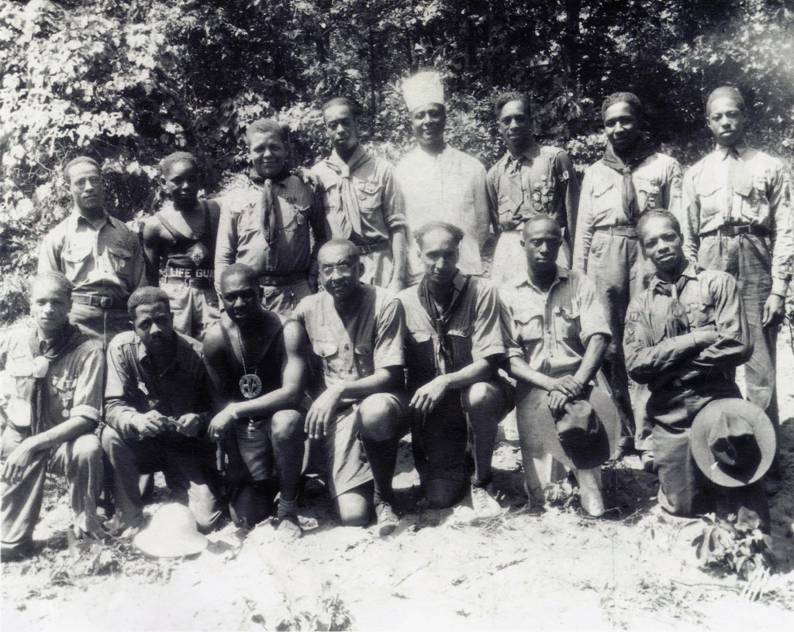
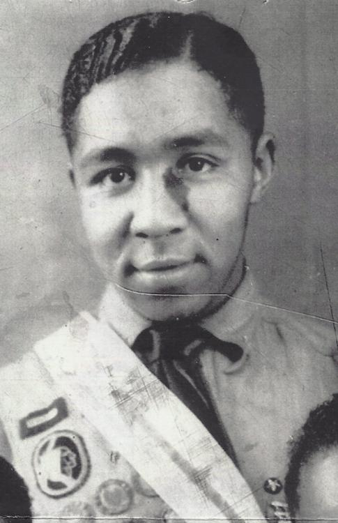

Larry Branch as the honoree at the 2010 Owasippe Lodge Vigil Dinner
Lawrence S. Branch
Vigil Name
Vigil name not yet recorded.
Do you know it? Help us complete this record →
Lawrence S. Branch was born on Chicago's Southside in the West Woodlawn neighborhood on August 27, 1914 to Emil and Sara Branch. The family lived at 6454 S. Eberhart Av. for many years during which time Larry joined Boy Scout Troop 541 sponsored by the Lincoln Memorial Congregational Church at 64th and Champlain Av. Local residents remember with pride how the young Scouts in full uniform would march to their Friday evening Troop meetings.
Larry attended the James McCosh Elementary School (renamed the Emmett Louis Till Math and Sciences Academy in 2006) and graduated from Tilden High School in its Class of 1931. Throughout his career Larry was self-employed and currently has retired to Phoenix, IL.
Over the years Larry served on staff at Owasippe Scout Camp in the Chicago Council's segregated Camp Belnap – comprised of African American Scouts throughout the Chicagoland Area. He personally remembers the pioneers of African American Scouting in Chicago: Dr. William H. Benson, a prominent dentist from West Woodlawn, who led Belnap as its first Camp Director for many years in the early and mid-1930's. Following Dr. Benson, Larry also remembers Emerson James, first as the Assistant Camp Director and later as Camp Director of Belnap for over ten years, until the Chicago Scout Camps were fully integrated in 1949, when Mr. James served on the first integrated staff at Camp Blackhawk. Emerson James was the first African American Vigil Member of the Order of the Arrow.
Larry was inducted into Takodah Chapter on its formation in 1931 at Camp Belnap. The Chapter, like the Camp for was African American Scouts wherever they lived in the Chicago Council. He served proudly as the Chief of Takodah Chapter in Owasippe Lodge between 1935-1936 and for his efforts as a Scout Leader, a staff member at Camp Belnap, and for his leadership of Takodah Chapter, Larry was awarded the Vigil Honor in 1945.
Scouts under Larry's guidance as Scoutmaster of Troop 541 extol his enthusiastic support of the Scouting program and his mentorship and guidance during their years as youth members. Several of his Scouts are here with us this evening and will attest to his uplifting influence on their lives.
Larry attributes his longevity to his lifelong work on behalf of young people. His life is an inspiration to all of us who work with youth to set them on a straight and virtuous path of living. A tribute to his tireless leadership might well be the greatest and most fitting gift we as Scouters can give to honor him as a man of integrity and courage who despite the many obstacles in his life, managed to rise above the challenges and live the tenets of the Scout Oath and Law.
Sadly, we lost Larry on Christmas Eve December 24, 2011, less than one month after attending the Vigil Dinner at which he was the life of the party. He joins the many other pioneers of African American Scouting at rest with God in Heaven.

